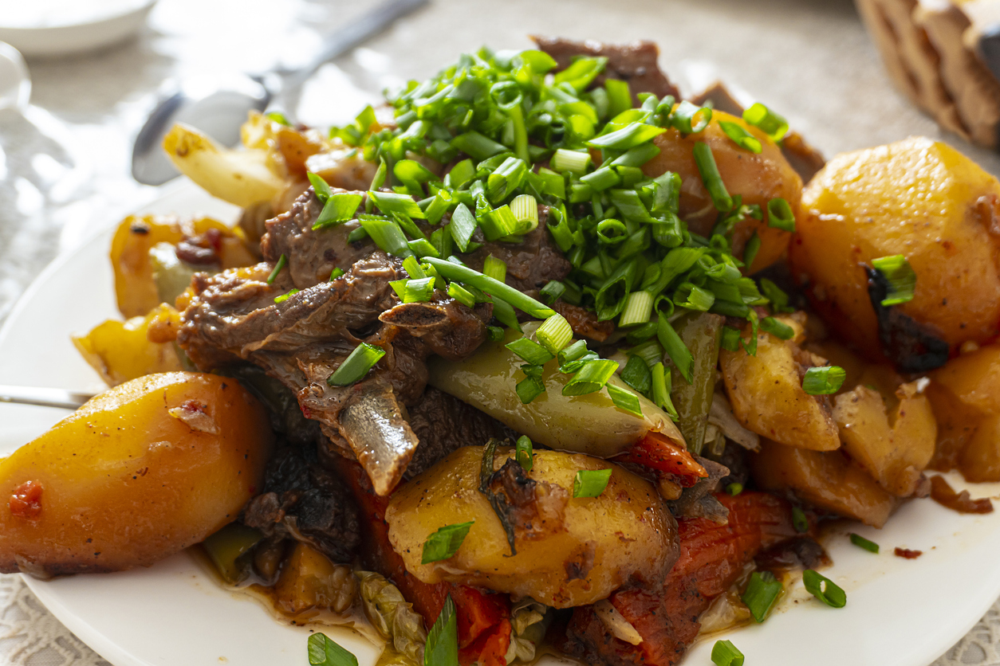

Kuurdak (куурдак) is a traditional Kyrgyz dish and one of the oldest recipes found in Central Asia. It is eaten throughout Central Asia and particularly beloved as a national dish in Kyrgyzstan.
This stewed meat dish is one of the easiest and simplest recipes to make. Traditionally, the meat used is mutton (lamb), horse, and/or organ meat cooked in plenty of fat from the animal. Nowadays, you can use whatever meat you like or have on hand, such as beef or chicken, however, fatty meat works best in this dish as the animal fat coats the meat and gives the dish it’s most traditional, lovely flavor.
Ingredients
- 15 ml oil (vegetable or sunflower)
- 500 g beef or lamb w/fat (cut into bite sized pieces)
- 1 large onion (separate ¾ and ¼)
- 4 medium sized potatoes
- 15 g garlic (2-4 cloves)
- 1 cup water
- 1 bunch green onions
- Salt & Pepper
Steps
- Slice one large onion into strings or rings (separate ¾ of the onion for cooking and ¼ of the onion for topping)
- Chop cloves of garlic into small pieces
- Slice 500 gr of beef or lamb into bite sized pieces (3 cm cubes work perfectly)
- Add salt and pepper to the meat (about ¼ tsp each)
- Peel and chop 4 medium-sized potatoes into 3 cm cubes
- Sauté meat in 15 ml oil, in a large pot until seared on all sides
- Add ¾ onion and garlic to the pot and sauté until onions are golden brown
- Add potato pieces to the pot, then pour 1 cup of water into the pot
- Cover and let cook for 30 minutes. Check the water of the pot occasionally, add more water if needed. When the potato pieces and meat are soft, the dish is ready!
- Plate dish and top with remaining ¼ onion slices
- Add additional salt and pepper if needed